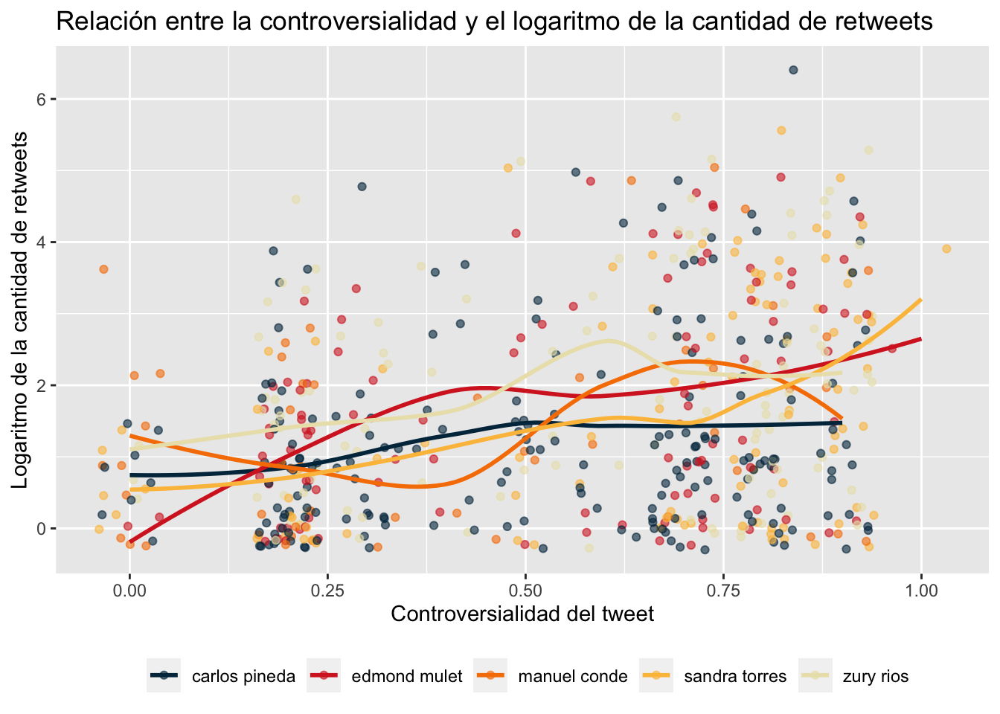

import tweepy
import backoff
import requests
from modules import setup_logger
@backoff.on_exception(
backoff.expo,
(tweepy.errors.TooManyRequests, requests.exceptions.ReadTimeout),
max_tries=5
)
def make_request(self) -> "TwitterRequest":
self.query = f"{self.query} -is:retweet -is:reply"
self.logger.info("Making request with query: %s", self.query)
try:
self.tweets = client.search_recent_tweets(
query = self.query,
start_time = self.start_time,
end_time = self.end_time,
max_results = self.max_results,
tweet_fields = [
"id", "author_id", "created_at", "text",
"public_metrics", "possibly_sensitive", "lang"
],
user_fields = [
"id", "username", "name", "location", "created_at", "description",
"profile_image_url", "verified", "public_metrics"
],
expansions = [
"author_id", "referenced_tweets.id"
]
)
if self.tweets is None or self.tweets.data is None:
self.logger.error("No tweets returned from request")
return self
except Exception as e:
self.logger.error("Exception occurred", exc_info=True)
raise
self.logger.info("Request completed successfully.")
return self1 Decodificando sentimientos
Con las elecciones presidenciales a poco más de dos semanas de distancia, la importancia de comprender la voz del público no puede subestimarse. A través del uso de técnicas avanzadas, esta entrada busca no solo descubrir patrones en el sentimiento público, sino también demostrar cómo la nueva generación de modelos de lenguaje pueden emplearse para ofrecer perspectivas únicas y valiosas en la dinámica social y política de los países. Específicamente, utilizaremos dos poderosos recursos para llevar a cabo este análisis: la API de Twitter y la API de OpenAI.
- Primero, descargaremos tweets que mencionan a los cinco candidatos que lideraban la encuesta de Prensa Libre publicada a principios de mayo desde la Twitter API V2 utilizando Python.
- Estos tweets, entonces, servirán como nuestro conjunto de datos base para extraer características utilizando la API de OpenAI y su modelo de lenguaje
gpt-3.5-turbo, empleando una técnica llamada zero-shot feature extraction. - Por último, realizaremos una breve exploración de los resultados utilizando R, mi herramienta favorita cuando se trata de procedimientos estadísticos y de análisis de datos.
A lo largo del blog, explicaremos cómo funcionan estas APIs, cómo utilizarlas implementando clases en Python lo suficientemente robustas como para lidiar con sus errores y excepciones, y cómo estos resultados se pueden utilizar para realizar un análisis profundo y significativo.
Desde hace varios años, la intersección entre las ciencias de la computación y las ciencias sociales se ha transformado en uno de mis temas favoritos. Es verdaderamente emocionante darse cuenta de que nos encontramos en un momento único, en el cual es posible emplear tecnologías de vanguardia para obtener insights de eventos significativos. Quizás es más emocionante aún considerar que este tipo de análisis habría sido prácticamente imposible de llevar a cabo hace solo dos años. ¿Lista? ¿Listo?
2 Extracción de tweets con Tweepy
Okay. Cartas sobre la mesa. Implementar estos programas ha conllevado bastante de mi tiempo libre en las últimas semanas; estoy seguro de que leer todos los detalles sobre estas implementaciones también requeriría de una cantidad de tiempo considerable, por lo que en esta y la siguiente sección únicamente haremos un repaso por los puntos más importantes1.
1 Para los lectores más interesados he publicado este repositorio en el es posible encontrar todos los programas y módulos utilizados para generar estos resultados. Las clases y sus métodos fueron debidamente documentados, pero siéntete libre de contactarme si te gustaría saber más sobre los detalles de estas implementaciones.
Enviando requests hacia la API
La estructura del repositorio es extremadamente sencilla y el diseño de las clases se adhiere al single-responsibility principle. El directorio modules contiene las clases encargadas de comunicarse con las APIs, mientras que los programas download_tweets.py y extract_features.py se encargan de descargar la información en batches. En el caso del procedimiento de extracción de tweets, el módulo twitter_request.py contiene a la clase TwitterRequest, responsable de comunicarse con la Twitter API V2 siguiendo los siguientes pasos:
- Consultar el endpoint
GET_2_tweets_search_recentde la API utilizando al métodosearch_recent_tweetspara extraer los tweets que necesitamos. - Procesar la respuesta de la API en formato JSON, conviertiéndola primero en un DataFrame.
- Separar a ese DataFrame en dos: Uno que contenga información de los tweets y otro que contenga información de los usuarios que realizaron dichas publicaciones.
- Preprocesar ambos DataFrames para estandarizar los nombres de las columnas y cambiar las columnas que contienen fechas a un formato más conveniente.
En esta clase, el método más importante es make_request. Este método está decorado con @backoff.on_exception una forma increíblemente conveniente de hacer exponential backoff en el momento en el que se produzca un error por generar demasiados requests o una excepción producto de un timeout entre nuestro cliente y el servidor. En cualquiera de estos casos, la función esperará un tiempo exponencialmente creciente antes de volver a intentarlo y únicamente hará un máximo de 5 intentos.
El mismo método define el query que se llevará a cabo, que en nuestro caso es un string con el nombre del candidato mencionado en los tweets, pero instruimos a la API para que no devuelva tweets que sean retweets o respuestas (f"{self.query} -is:retweet -is:reply"). En la solicitud, se incluyen campos específicos de los tweets y del usuario que los publicó. Por ejemplo, del tweet se solicita el ID, el autor, la fecha de creación, el texto, las métricas como cantidad de retweets, likes o respuestas, así como si la publicación tienen contenido sensible y cuál es su idioma. Del usuario solicitamos el ID, el nombre de usuario, el nombre, la ubicación, la fecha de creación del perfil, la descripción, la imagen de perfil, sus métricas públicas y si su perfil está verificado o no2.
2 Aunque mis procedimientos extrajeron toda esta información para más de 5,000 tweets que fueron publicados por múltiples usuarios durante las últimas dos semanas, el Developer Agreement and Policy de Twitter me prohibe publicar la totalidad de la información. Sin embargo, he publicado un dataset reducido que contiene 1,420 tweets con sus respectivas métricas públicas y las características extraídas utilizando al modelo de lenguaje.
Si la solicitud es exitosa, se obtiene cierta cantidad de tweets que son almacenados en el atributo self.tweets. Si no se obtiene ningún tweet, se registra un error en el log. Si ocurre alguna otra excepción durante la solicitud, también se registra en el log y es levantada para que pueda ser manejada por el decorador encargado de hacer exponential backoff. Por último, si la solicitud se completó con éxito, registramos este hecho en el log y retornamos al objeto self, para darnos la posibilidad de hacer method chaining.
De esta forma, utilizar la clase TwitterRequest requiere únicamente de inicializarla con los parámetros query, start_time, end_time y max_results. Like so:
from datetime import datetime
from modules import TwitterRequest
tweets, users = (
TwitterRequest(
query='zury rios',
start_time=datetime(2023, 5, 20, 15, 00),
end_time=datetime(2023, 5, 21, 15, 00),
max_results=10
)
.make_request()
.tweets_to_dataframe()
.users_to_dataframe()
.segregate_dataframe()
.preprocess_data(
tweets_prefix='tw_',
users_prefix='us_'
)
)Descargando tweets en batches
Tenemos una forma de comunicarnos con la API de Twitter, pedirle los datos que nos interesan y preprocesarlos para que estén listos para el resto del pipeline. Sin embargo, Twitter no nos va a hacer la vida fácil. Su API únicamente permite descargar tweets publicados en los últimos 7 días en batches de 60 tweets como máximo en un espacio de 15 minutos.3
3 Overprotective much?
Ni modo. El programa download_tweets.py esta diseñado para lidiar con las restricciones de la API de Twitter. El método download_tweets es un componente de la clase DownloadTweets. En resumen, este método descarga tweets y usuarios (utilizando el método get_batch, que es un wrapper para la clase TwitterRequest). Para cada candidato y rango de fechas, se invoca el método get_batch para obtener los tweets y usuarios, que se recopilan y se concatenan en dos atributos: self.tweets y self.users. Finalmente, el método devuelve estos dos DataFrames que contienen todos los tweets y usuarios recolectados.
import pandas as pd
from typing import Tuple
from modules import setup_logger
from modules import TwitterRequest
def download_tweets(self) -> Tuple[pd.DataFrame, pd.DataFrame]:
self.generate_dates()
logger.info(f"Generated {len(self.dates)} date pairs for tweet downloads.")
# Collect tweets and users for each candidate.
tweets_collector, users_collector = [], []
for candidate in self.candidates:
# Collect tweets and users for each date.
dates_tweets_collector, dates_users_collector = [], []
for start_date, end_date in self.dates:
tweets, users = self.get_batch(candidate, start_date, end_date)
dates_tweets_collector.append(tweets)
dates_users_collector.append(users)
tweets_collector.append(pd.concat(dates_tweets_collector))
users_collector.append(pd.concat(dates_users_collector))
self.tweets = pd.concat(tweets_collector, axis=0, ignore_index=True)
self.users = pd.concat(users_collector, axis=0, ignore_index=True)
logger.info(
f"Downloaded a total of {len(self.tweets)} tweets and {len(self.users)} users."
)
return self.tweets, self.users3 Zero-shot feature extraccion con GPT-3.5
Ahora viene una de mis partes favoritas en este proceso. Vamos a usar a GPT-3.5 para generar nuevas features basadas en los tweets que hemos extraído. ¿Cómo? Much in the same way we downloaded tweets, usando una clase llamada OpenAIRequest (que se encargará de comunicarse con la API) y otra, llamada FeatureExtraction, que nos servirá para iterar en las filas del DataFrame que contiene las publicaciones de los usuarios de Twitter.
Enviando requests hacia la API
El primer método relevante en la clase OpenAIRequest es make_request. De manera similar al método con el mismo nombre en el procedimiento de extracción de tweets, esta función estática está decorada con backoff.on_exception para poder lidiar con errores en el caso de un timeout o por sobrepasar los límites de uso de la API. En el caso del modelo gpt-3.5-turbo, podemos realizar una cantidad de 3,500 requests por minuto o enviar al endpoint un máximo 90,000 tokens en la misma cantidad de tiempo, lo que pase primero.
Como veremos más adelante, el prompt con el que instruiremos al modelo tiene, en promedio, 600 tokens.4 En teoría, esto quiere decir que (basándonos en el límite de TPM) podemos enviar 150 requests cada 60 segundos. En la práctica, though, los tiempos de inferencia de los modelos de lenguaje son bastante altos. En nuestro caso, el tiempo de procesamiento por cada tweet fue de aproximadamente 15 segundos, así que extraer características para 1,420 tweets fue un proceso que tomó 6 horas, give or take.
4 OpenAI pone a nuestra disposición este tokenizer, una herramienta que nos permite hacer un recuento de la cantidad de tokens en nuestros prompts. En lo personal, me sirve muchísimo para calcular los costos de procesamiento y para asegurarme de que mis prompts sean eficientes en términos de longitud.
Los parámetros que acepta make_request son nuestro prompt, la especificación del modelo que queremos utilizar y temperature, un parámetro del modelo de lenguaje que puede ser un número entre 0 y 1. La temperatura controla el grado de aleatoriedad en las respuestas del modelo. Un valor de temperature más alto (cerca de 1) hace que el modelo genere respuestas más diversas y creativas, mientras que un valor más bajo (cerca de 0) hace que las respuestas sean más determinísticas o consistentes.5
5 Los transformers, como GPT, son en sí mismos arquitecturas de redes neuronales determinísticas (es decir, generan la misma salida para una entrada específica). Sin embargo, se introduce aleatoriedad durante la generación de texto a través del muestreo de diferentes secuencias de palabras de acuerdo a las probabilidades de salida del modelo. En general, cuando usamos al modelo como un paso de procesamiento dentro de nuestros pipelines, queremos que cada respuesta sea lo más consistente posible para reducir las posibilidades de introducir bugs en nuestro sistema.
import openai
import backoff
import requests
@staticmethod
@backoff.on_exception(
backoff.expo,
(openai.error.RateLimitError, requests.exceptions.ReadTimeout),
max_tries=5
)
def make_request(prompt: str, model: str = "gpt-3.5-turbo", temperature: float = 0) -> str:
messages = [{"role": "user", "content": prompt}]
response = openai.ChatCompletion.create(
model=model,
messages=messages,
temperature=temperature,
)
return response.choices[0].message["content"]El siguiente método relevante en la clase OpenAIRequest es extract_features. En este método, definimos el prompt que será utilizado para instruir al modelo de lenguaje. Este prompt es parametrizado a través de una f string, para permitirnos cambiar fácilmente la entrada según sea necesario.
Una vez definido el prompt, realizamos la consulta a la API de OpenAI utilizando el método make_request. Si la respuesta obtenida es nula o inválida, registramos un error en el log y retornamos None. Además, para robustecer al procedimiento y manejar posibles excepciones durante la solicitud a la API, hemos envuelto este segmento de código dentro de un bloque Try Except. Si todo sale según lo planeado y obtenemos una respuesta válida, la misma es cargada como un diccionario JSON y finalmente retornada por el método extract_features.
import json
from modules import setup_logger
def extract_features(self, prefix: str) -> dict:
prompt = f""" (...) """
try:
response = OpenAIRequest.make_request(prompt)
if response is None:
self.logger.error("Received invalid response from OpenAI")
return None
response = json.loads(response)
except Exception as e:
self.logger.error(f"Exception during API request: {e}")
return None
return responsePrompt engineering
Tengo que confesar algo. Hace unas semanas leí en una publicación de LinkedIn una frase que decía algo así como: “Calling ‘prompt engineering’ the action of using ChatGPT today is like calling ‘search engineering’ to googling something in the early 2000s”. Y la confesión es que… pienso que es verdad.6
6 Por cierto, ya que estamos confesando cosas. La idea de esta entrada surgió porque hace poco más de un mes vi los videos del curso de deeplearning.ai llamado ChatGPT Prompt Engineering for Developers. Es un curso extremadamente corto que tiene información útil acerca de los casos de uso del modelo desde una perspectiva programática. Si estás leyendo este blog, chances are you’re also gonna like this.
Nontheless, considero que cuando vamos un paso más allá y utilizamos estos modelos desde los endpoints que OpenAI pone a nuestra disposición, el hype que existe hacia el término está un poco más justificado. Principalmente porque, aunque redactamos la instrucción en lenguaje natural, el procedimiento recuerda mucho a definir una serie de pasos en cualquier lenguaje de programación.
Para nuestros fines, este prompt dio buenos resultados:
prompt = f"""
El siguiente es un tweet que menciona a un candidato presidencial dentro de la contienda electoral 2023 en Guatemala.
Por favor, clasifícalo de acuerdo a las siguientes categorías:
Valencia (sentimiento general): [positivo, negativo, neutro, otro]
Emoción (emoción principal expresada): [felicidad, tristeza, enojo, miedo, sorpresa, disgusto, otro]
Postura (actitud hacia el tema): [aprobación, desaprobación, esperanza, desilusión, indiferencia, confianza, desconfianza, otro]
Tono (forma de expresarse): [agresivo, pasivo, asertivo, escéptico, irónico, humorístico, informativo, serio, inspirador, otro]
Además, evalúalo utilizando una escala continua con rango de 0 a 1 en las siguientes dimensiones:
Amabilidad (nivel de cortesía): [0.0 - 1.0]
Legibilidad (facilidad de lectura): [0.0 - 1.0]
Controversialidad (potencial para generar desacuerdo): [0.0 - 1.0]
Informatividad (cantidad de información relevante y fundamentada): [0.0 - 1.0]
Formatea tu respuesta como un diccionario de Python con las siguientes llaves:
[valencia, emocion, postura, tono, amabilidad, legibilidad, controversialidad, informatividad]
Tweet: '''{self.tweet}'''
"""Zero-shot feature extraction
Estamos muy cerca de obtener los resultados que buscamos. Hasta el momento, los módulos que hemos implementado nos permiten enviar consultas hacia las APIs de Twitter y OpenAI, así como descargar lotes de tweets que mencionan a los cinco candidatos que encabezaban la encuesta de Prensa Libre, publicada a inicios de mayo. Solo nos falta una forma procesar estos tweets para extraer variables que nos permitan analizarlos a una mayor profundidad. Enter extract_features.py, un programa en el que la clase OpenAIRequest es instanciada dentro de la clase FeatureExtraction.
En el constructor de la clase se inicializan las rutas a dos archivos: df_path que es la ruta al archivo CSV de entrada que contiene los tweets, y results_df_path que es la ruta al archivo csv de salida donde se almacenarán las variables extraídas.
El principal método de esta clase es extract_features. Este método primero carga los tweets del archivo CSV de entrada y elimina los duplicados. Luego intenta cargar las características ya extraídas del archivo CSV de salida. Si este archivo no existe, se inicializa un nuevo DataFrame vacío. El método luego determina qué tweets aún no han sido procesados comparando los tweets en los dos DataFrames y seleccionando aquellos que solo están en el DataFrame de entrada.
import pandas as pd
from modules import OpenAIRequest
def extract_features(self):
df = pd.read_csv(self.df_path)
df = df.drop_duplicates(subset=['tw_texto'], keep='first')
try:
df_results = pd.read_csv(self.results_df_path)
df_results = df_results.drop_duplicates(subset=['tw_texto'], keep='first')
except FileNotFoundError:
df_results = pd.DataFrame()
df_to_process = df[~df['tw_texto'].isin(df_results['tw_texto'])]
df_to_process = df_to_process.dropna()
for index, row in df_to_process.iterrows():
tweet = row['tw_texto']
response = (
OpenAIRequest(tweet)
.preprocess_text()
.extract_features(prefix='tw_')
)
df_result = pd.DataFrame([response], index=[index])
df_results = pd.concat([df_results, df_result])
df_results.to_csv(self.results_df_path, index=False)A continuación, se procesa cada tweet. Para cada uno, se realiza una solicitud a la API de OpenAI para realizar el procedimiento de feature extraction utilizando al modelo gpt-3.5-turbo. Las características extraídas se añaden al DataFrame de resultados junto con el tweet original y un tag para identificar a qué candidato se refiere cada publicación.
Finalmente, después de procesar todos los tweets, el DataFrame de resultados se guarda en el archivo CSV de salida. Esto se hace después de procesar cada tweet para evitar la pérdida de información en caso de que se produzca un error durante el procedimiento.
4 Análisis de la opinión pública
Cool. Todos los procedimientos anteriores nos llevan a esta situación en la que tenemos un conjunto de datos listo para ser analizado. Como mencioné en algún punto de esta entrada, he publicado este dataset en un repositorio de GitHub. Síentete libre de descargarlo y hacer tu propio análisis exploratorio de datos; si lo haces, me encantaría conocer qué encuentras. Sin nada más que agregar, el dataset luce así:
| fecha | tweet | candidato | retweets | replies | likes | quotes | impresiones | valencia | emocion | postura | tono | amabilidad | legibilidad | controversialidad | informatividad | sensitivo |
|---|---|---|---|---|---|---|---|---|---|---|---|---|---|---|---|---|
| 2023-05-15 | Sandra Torres es capaz de todo por mantener el poder. Recibió dinero sucio, se vendió con Alejandro Giammattei para evitar que cancelaran su partido, incluyó a señalados de corrupción y participó de una red de captación de fondos ilícitos. https://t.co/4J2pX1BSx6 | sandra torres | 0 | 1 | 0 | 0 | 335 | negativo | enojo | desaprobación | agresivo | 0.2 | 0.8 | 0.9 | 0.9 | FALSE |
| 2023-05-15 | Sandra Torres anda regalando zapatos a cambio de votos 😡 esto tiene que parar https://t.co/8OltsAmeiq | sandra torres | 0 | 0 | 5 | 0 | 420 | negativo | enojo | desaprobación | agresivo | 0.2 | 0.9 | 0.8 | 0.8 | FALSE |
| 2023-05-15 | Y en donde están los ladrones como Sandra torres. Baldizon. Los arzu. Portillo. Los ríos montt. Los jimmy morales. Los Giammattei y tantos diputados. Que le han robado millones al pueblo de guatemala. https://t.co/KVngH40GF9 | sandra torres | 0 | 0 | 0 | 0 | 234 | negativo | enojo | desaprobación | agresivo | 0.2 | 0.8 | 0.7 | 0.9 | FALSE |
| 2023-05-15 | #AlertaPopulista 🚨 ¿Sandra Torres, sabe cuáles son derechos humanos? Te presentamos el episodio número 5 de nuestra sección "El Populista de la Semana" con @PalmieriWaelti #EleccionesGuatemala #Elecciones2023 #Guatemala #EleccionesGT #Populistas #Facts #Noticias https://t.co/MeoijdOE12 | sandra torres | 6 | 9 | 17 | 1 | 3186 | negativo | enojo | desaprobación | agresivo | 0.2 | 0.9 | 0.8 | 0.8 | FALSE |
| 2023-05-15 | La CC dejó en firme la inscripción del binomio presidencial de la UNE conformado por Sandra Torres y Romeo Estuardo Guerra Lemus. 🔽 https://t.co/yG7AEiXV1Y | sandra torres | 0 | 0 | 0 | 0 | 129 | neutro | otro | información | informativo | 0.8 | 1.0 | 0.2 | 1.0 | FALSE |
| 2023-05-15 | 🤔🤣 ¿La hija de Sandra Torres hablando de izquierdosos? ¿WTF?!!! https://t.co/Jd4ZaiQ9K3 https://t.co/qk4vZo50aD | sandra torres | 0 | 0 | 2 | 0 | 180 | negativo | enojo | desaprobación | irónico | 0.2 | 1.0 | 0.8 | 0.6 | TRUE |
Explorando el dataset
Como podemos ver, la información extraída considera básicamente las últimas dos semanas del mes de marzo.
Código
| Fecha inicial | Fecha final |
|---|---|
| 2023-05-15 | 2023-05-27 |
Durante los procedimientos de extracción se definió la misma cantidad de tweets para cada candidato. Sin embargo, al eliminar tweets duplicados podemos notar que, durante el periodo de tiempo del análisis, las personas en Twitter hablaron casi cuatro veces más de Carlos Pineda (quien, para el momento de la extracción de tweets, aún seguía participando en la contienda electoral) que de Manuel Conde.
Código
df |>
group_by(candidato) |>
summarise(
count = n()
) |>
ggplot(aes(reorder(candidato, -count), count, fill = candidato)) +
geom_col(alpha = 0.6) +
labs(
title = "Cantidad de tweets por candidato"
) +
theme(
axis.title.x = element_blank(),
axis.title.y = element_blank(),
legend.title = element_blank(),
legend.position = "bottom"
) +
scale_fill_manual(values = palette)| Candidato | Engagement |
|---|---|
| carlos pineda | 0.8963113 |
| edmond mulet | 1.4452980 |
| manuel conde | 1.6900648 |
| sandra torres | 1.4844873 |
| zury rios | 1.9128208 |
Pero no solo podemos fijarnos en la cantidad de tweets que mencionan a los candidatos, sería importante también considerar la calidad de estas publicaciones. Para ello, vamos a computar el engagement rate de cada publicación, definido como la suma de interacciones (retweets, replies, likes y quotes) de cada tweet, dividida entre la cantidad de impresiones que la publicación tuvo. Curiosamente, los tweets que mencionan a Carlos Pineda son los que tienen un menor engagement. Mmm, muchos tweets con poco engagement… ¿a ustedes también les suena raro?
La siguiente gráfica muestra la distribución del logaritmo del engagement rate por cada uno de los candidatos. Parece que hablar de Zury Ríos es una buena forma de conseguir atención. Aunque no por mucho. En promedio, solo el 1.9% de las impresiones de los tweets que hablaban de Zury Ríos resultaron en algún tipo de interacción.
Código
df |>
mutate(
engagement = log(((retweets + replies + likes + quotes) / impresiones * 100))
) |>
group_by(candidato) |>
ggplot(aes(engagement, candidato, fill = candidato)) +
geom_boxplot(alpha = 0.6, ) +
labs(title = "Logaritmo de la tasa de engagement por cada candidato") +
theme(
axis.title.x = element_blank(),
axis.title.y = element_blank(),
axis.text.y = element_blank(),
axis.ticks.y = element_blank(),
legend.title = element_blank(),
legend.position = "bottom"
) +
scale_fill_manual(values = palette) Analizando sentimientos
Obviamente, lo más interesante de este análisis es utilizar las variables que fueron generadas por gpt-3.5-turbo. Podemos empezar por preguntarnos si existe alguna relación entre la cantidad de interacciones y la valencia (el sentimiento general) del tweet. Y my oh my, resulta que sí.
One-way ANOVA
| term | statistic | p.value |
|---|---|---|
| retweets | 9.241632 | 0.0001029 |
| replies | 2.783355 | 0.0621688 |
Tweets con sentimiento negativo tienen más retweets en promedio, mientras que publicaciones con sentimiento positivo tienen, en promedio, más cantidad de respuestas. De hecho, la diferencia entre las medias del logaritmo de la cantidad de retweets segregados por la valencia es estadísticamente significativa, como lo muestra la tabla al margen de esta sección, en la que he realizado un análisis de varianza, tanto para los tweets como para las respuestas.7
7 Sin embargo, no es posible rechazar la hipótesis nula para el caso de las respuestas. Pero esto a todas luces es debido a que las medias del logaritmo de la cantidad de respuestas para tweets con sentimiento negativo y neutro son prácticamente iguales.
Código
library(patchwork)
retweets <-
df |>
group_by(candidato) |>
ggplot(aes(valencia, log(retweets), fill = valencia)) +
geom_boxplot(alpha = 0.6) +
labs(y = "Logaritmo de la cantidad de retweets") +
theme(
axis.title.x = element_blank(),
axis.text.y = element_blank(),
axis.ticks.y = element_blank(),
legend.title = element_blank(),
legend.position = "none"
) +
scale_fill_manual(values = palette)
replies <-
df |>
group_by(candidato) |>
ggplot(aes(valencia, log(replies), fill = valencia)) +
geom_boxplot(alpha = 0.6) +
labs(y = "Logaritmo de la cantidad de replies") +
theme(
axis.title.x = element_blank(),
axis.text.y = element_blank(),
axis.ticks.y = element_blank(),
legend.title = element_blank(),
legend.position = "none"
) +
scale_fill_manual(values = palette)
retweets + replies +
plot_annotation("Relación entre los tipos de interacción y la valencia del mensaje")Otra pregunta importante es cómo se relacionan la controversialidad de los tweets—definida aquí como el potencial de una publicación para generar desacuerdo—y la cantidad de veces que son retuiteados. Podríamos esperar que a mayor controversialidad, mayor sea la probabilidad de obtener más retweets. Esta hipótesis parece confirmarse al observar las regresiones polinomiales locales ajustadas para cada candidato, que demuestran una relación positiva entre la controversialidad y la cantidad de retweets.
En estas regresiones, hemos incluido la puntuación de controversialidad de los tweets, calculada utilizando el modelo GPT durante la extracción de características. En general, los resultados sugieren que los tweets más controvertidos tienden a ser retuiteados con mayor frecuencia para cada uno de los cinco candidatos en nuestro análisis, en promedio.
Código
df |>
ggplot(aes(controversialidad, log(retweets), color = candidato)) +
geom_jitter(height = 0.3, alpha = 0.6) +
geom_smooth(se = FALSE, alpha = 0.6) +
labs(
title = "Relación entre la controversialidad y el logaritmo de la cantidad de retweets",
x = "Controversialidad del tweet",
y = "Logaritmo de la cantidad de retweets"
) +
theme(
legend.title = element_blank(),
legend.position = "bottom"
) +
scale_color_manual(values = palette) 
Para finalizar nuestro análisis, representamos gráficamente la distribución de los tweets divididos en cuatro categorías emocionales: aprobación, desaprobación, esperanza e indiferencia. De forma general, se observa una predominancia de la desaprobación en todos los candidatos analizados, con un promedio del 66 por ciento.
Sandra Torres encabeza esta tendencia, casi un 80 por ciento de los tweets en los que se le menciona reflejan desaprobación. Al mismo tiempo, Torres presenta la segunda menor proporción de tweets con tono de aprobación, siendo solo superada por Carlos Pineda. En cuanto a la indiferencia, Manuel Conde es el candidato que acumula la mayor cantidad de tweets bajo esta postura, en comparación con los demás contendientes.
Código
df |>
group_by(candidato, postura) |>
summarise(cantidad = n()) |>
filter(str_detect(postura, "aprobación|desaprobación|esperanza|indiferencia")) |>
mutate(cantidad = cantidad / sum(cantidad)) |>
ggplot(aes(reorder(candidato, cantidad), cantidad, fill = postura)) +
geom_col(position = "dodge", alpha = 0.6) +
labs(title = "Proporción de tweets por candidato según la postura del usuario") +
theme(
axis.title.x = element_blank(),
axis.title.y = element_blank(),
legend.title = element_blank(),
legend.position = "bottom"
) +
scale_fill_manual(values = palette) 
5 Conclusiones
Durante esta entrada, utilizamos la API de Twitter y la API de OpenAI para decodificar los sentimientos de los usuarios de Twitter en torno a cinco candidatos presidenciales en la contienda electoral de 2023 en Guatemala. Este estudio demostró la eficacia de las tecnologías avanzadas en la comprensión de la dinámica social y política, ilustrando cómo foundation models como gpt-3.5-turbo pueden emplearse para extraer características valiosas y generar insights significativos.
Descargamos tweets que mencionan a los candidatos mediante la Twitter API V2 y los utilizamos como nuestro conjunto de datos base. Luego, extraímos características de los tweets utilizando la API de OpenAI y realizamos una exploración inicial de los resultados con R.
Mis reflexiones personales tras realizar estos experimentos se resumen en los siguientes puntos:
Primero, al interactuar con APIs, la robustez es clave. La capacidad de gestionar eficazmente errores y excepciones es fundamental. Un estudio de Papasian & Underwood (2020), dos ingenieros de aprendizaje automático en Google, destaca que la mayoría de los problemas en sistemas de machine learning no se deben a la implementación de los modelos per se, sino a fallas en los flujos de trabajo de los data pipelines.
En segundo lugar, mis experiencias con la API de OpenAI han revelado que, si bien GPT es bastante competente en la mayoría de las tareas que he probado, tiene sus limitaciones. Una desventaja notable es el fenómeno popularmente conocido como “alucinaciones”. En edge cases (situaciones inusuales dentro del contenido de los prompts que se envían al modelo), este tiende a inventar nuevas categorías que pueden parecer más adecuadas para el texto, pero que introducen etiquetas que, en teoría, no deberían existir en el conjunto de datos.
Por último, hay que tener en cuenta que los tiempos de inferencia son relativamente largos. Esto plantea desafíos de escalabilidad al usar este modelo como método de procesamiento, especialmente a medida que el conjunto de datos se expande.
Este estudio evidencia el emocionante cruce entre las ciencias de la computación y las ciencias sociales, y cómo esta intersección permite generar insights de eventos significativos a través de tecnologías avanzadas. Pese a los desafíos, el resultado es un conjunto de datos valiosos y un análisis significativo de las opiniones de los votantes sobre los candidatos presidenciales.
Referencias
Papasian, D., & Underwood, T. (2020). How ML Breaks: A Decade of Outages for One Large ML Pipeline. https://www.usenix.org/conference/opml20/presentation/papasian